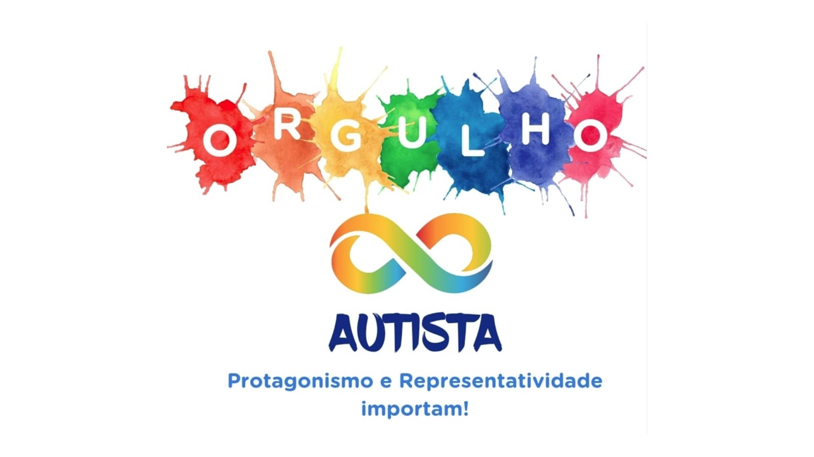

Bem-vindo ao Dia do Orgulho Autista

Este site foi desenvolvido com o objetivo de valorizar a neurodiversidade, promover o respeito às pessoas autistas e destacar a importância da inclusão na sociedade.
O Dia do Orgulho Autista, celebrado em 18 de junho, representa um momento de reconhecimento da identidade autista e de incentivo à construção de um ambiente mais inclusivo e consciente.
Por que essa data é importante?
O Dia do Orgulho Autista reforça a ideia de que o autismo não deve ser visto como algo a ser corrigido, mas como uma forma legítima de perceber e interagir com o mundo.
Mais do que focar em limitações, essa data convida à valorização das habilidades, das diferentes formas de pensar e do respeito à individualidade de cada pessoa.
Você sabia?
- O autismo é uma condição do neurodesenvolvimento.
- O símbolo do infinito representa a diversidade das experiências autistas.
- O movimento do Orgulho Autista surgiu em 2005 e é reconhecido internacionalmente.
“Respeitar as diferenças é essencial para construir uma sociedade mais justa e inclusiva.”